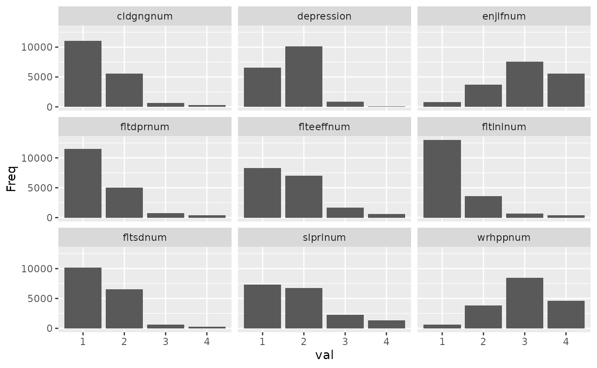

Using survey weights
Large-scale social surveys often do not aim to recruit random samples, but rather oversample small groups that are of interest for sub-group analyses (e.g., ethnic minorities). In addition, they never quite succeed in recruiting representative samples. To ensure that the results of statistical models approximate population parameters, survey weights need to be used to give each participant a specific weight in analyses. You can find out more in this brief YouTube video or explore the more extensive guide to weights in the European Social Survey as an example.
Survey weights in timesaveR
Many functions in the timesaveR package have
alternatives that accept survey objects instead of dataframes. These
functions are designated by the svy_ prefix. To use them,
you will first need to use the srvyr package to create a
survey object based on the dataframe.
Below, I show some analyses of the European Social Survey 2014 data using the correct survey weights.
Create scales
Let’s create scales for health behaviours and depressive symptoms,
each including some reverse coding. For that, we need to pass the survey
items (as well as any to be reversed) to the
svy_make_scale() function
depression_items = c("fltdpr", "flteeff", "slprl", "wrhpp", "fltlnl",
"enjlf", "fltsd", "cldgng")
healthy_eating_items = c("etfruit", "eatveg")
depression_reversed = c("wrhpp", "enjlf")Then, the svy_make_scale() command can be used to
calculate scale scores and display descriptives. It
returns the survey object with the new variable added, so that you can
use a pipeline to create multiple scales.
ess_survey <- svy_make_scale(ess_survey, depression_items,
"depression", reversed = depression_reversed) %>%
svy_make_scale(healthy_eating_items, "healthy_eating", r_key = -1)
#>
#> Descriptives for depression scale:
#> Mean: 1.660 SD: 0.480
#> Cronbach's alpha: .79
#>
#> The following items were reverse coded (with min and max values):
#> wrhpp (1, 4)
#> enjlf (1, 4)
#>
#> Descriptives for healthy_eating scale:
#> Mean: 4.931 SD: 1.131
#> Cronbach's alpha: .66
Report correlations
You can use svy_cor_matrix() to calculate weighted
correlations, and then use report_cor_table() to present
them nicely. To improve the calculation of confidence intervals,
n should be specified as the weighted number of survey
responses in that call.
ess_survey %>%
select(agea, health, depression, healthy_eating) %>%
svy_cor_matrix() %>%
report_cor_table(n = survey_tally(ess_survey)[[1]])
#> Confidence intervals are calculated based on correlation coefficient +/- 2 SE.
#> This is generally not recommended!| Variable | M (SD) | 1 | 2 | 3 |
|---|---|---|---|---|
|
47.87 (18.98) | |
|
|
|
2.23 (0.91) | .30 *** [0.28, 0.32] |
|
|
|
1.66 (0.48) | .05 *** [0.02, 0.07] |
.41 *** [0.39, 0.44] |
|
|
4.93 (1.13) | .17 *** [0.15, 0.20] |
-.09 *** [-0.11, -0.07] |
-.11 *** [-0.13, -0.08] |
| M and SD are used to represent mean and standard deviation, respectively. Values in square brackets indicate the 95% confidence interval for each correlation. | ||||
| † p < .1, * p < .05, ** p < .01, *** p < .001 | ||||
It is often helpful to use different variable names for display. For
this, functions in the package typically accept rename tibbles that
contain an old and a new column. By using the
tibble::tribble notation, they can be entered more cleanly
than named character vectors, and the get_rename_tribble()
helper function creates most of the code.
#Call
# get_rename_tribbles(ess_health, agea, health, depression, healthy_eating, which = "vars")
# to get most of this code
var_renames <- tibble::tribble(
~old, ~new,
"agea", "Age",
"health", "Poor health",
"depression", "Depression",
"healthy_eating", "Healthy eating"
)
# If var_names are provided, only variables included in that argument
# are included in the correlation table
ess_survey %>% svy_cor_matrix(var_names = var_renames) %>%
report_cor_table(n = survey_tally(ess_survey)[[1]])
#> Confidence intervals are calculated based on correlation coefficient +/- 2 SE.
#> This is generally not recommended!| Variable | M (SD) | 1 | 2 |
|---|---|---|---|
|
47.87 (18.98) | |
|
|
2.23 (0.91) | .30 *** [0.28, 0.32] |
|
|
1.66 (0.48) | .05 ** [0.02, 0.07] |
.41 *** [0.39, 0.44] |
| M and SD are used to represent mean and standard deviation, respectively. Values in square brackets indicate the 95% confidence interval for each correlation. | |||
| † p < .1, * p < .05, ** p < .01, *** p < .001 | |||
For now, we cannot add_distributions to the
correlation table while using survey weights.
Testing significance of difference between two groups
Running a t-test on survey data is easy with
survey::svyttest(). However, getting Cohen’s d as
a measure of effect size, or subsetting to compare just two levels if
there are more in the data is less trivial, and is where
svy_cohen_d_pair() comes in.
svy_cohen_d_pair(ess_survey, "health", "gndr")
#> # A tibble: 1 × 8
#> pair d t df p.value mean_diff mean_diff_ci.low mean_diff_ci.high
#> <chr> <dbl> <dbl> <dbl> <dbl> <dbl> <dbl> <dbl>
#> 1 1 & 2 -0.133 -0.120 7217 1.40e-6 -0.120 -0.0714 -0.169
svy_cohen_d_pair(ess_survey, "health", "cntry", pair = c("DE", "GB"))
#> # A tibble: 1 × 8
#> pair d t df p.value mean_diff mean_diff_ci.low mean_diff_ci.high
#> <chr> <dbl> <dbl> <dbl> <dbl> <dbl> <dbl> <dbl>
#> 1 DE & … 0.324 0.295 5301 7.94e-25 0.295 0.351 0.239Running pairwise t-tests
svy_pairwise_t_test() allows to run pairwise t-tests,
e.g., as post-hoc comparisons, between multiple groups in the survey.
p-values are adjusted for multiple comparisons, by default
using the Holm-Bonferroni method.
svy_pairwise_t_test(ess_survey, "health", "cntry", cats = c("DE", "GB", "FR"))
#> # A tibble: 3 × 8
#> pair d t df p.value mean_diff mean_diff_ci.low
#> <chr> <dbl> <dbl> <dbl> <dbl> <dbl> <dbl>
#> 1 GB & DE -0.324 -0.295 5301 2.38e-24 -0.295 -0.351
#> 2 FR & DE -0.0956 -0.0849 4954 5.88e- 3 -0.0849 -0.145
#> 3 GB & FR -0.233 -0.210 4177 3.16e-10 -0.210 -0.274
#> # ℹ 1 more variable: mean_diff_ci.high <dbl>